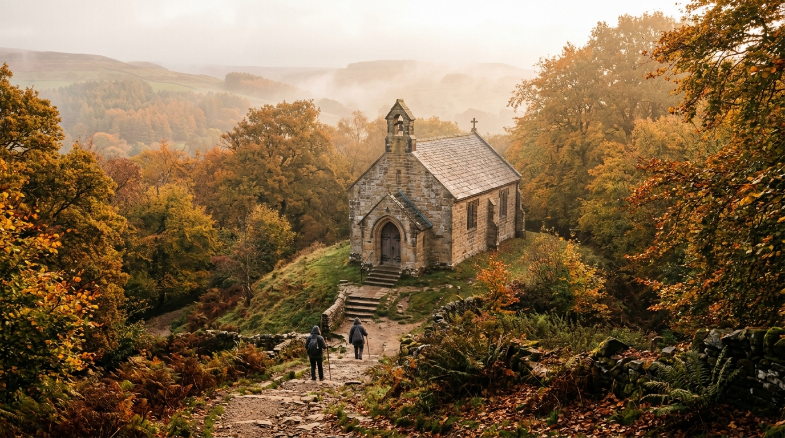

A Pilgrimage in the Month of Mary
Osmotherley, North Yorkshire
Join us as we place our loved ones, intentions, hopes and plans before Our Lady, asking her maternal prayers for our families and our community as we draw closer to her Son.
All parishioners, youth, families & friends are warmly welcome
18 North End, Osmotherley, Northallerton DL6 3BB
Over 600 years of Catholic pilgrimage in the Cleveland Hills

Perched high above Osmotherley with expansive views across the Vale of Mowbray, the Lady Chapel was founded in the late 14th century in connection with the Carthusian monks of Mount Grace Priory (1398).
Throughout centuries of persecution and penal times following the English Reformation, this quiet stone sanctuary remained a steadfast refuge of Catholic faith, where pilgrims secretly climbed the hillside to ask Our Lady’s intercession.
Today, lovingly restored under the Diocese of Middlesbrough, the shrine stands as a holy haven of peace, prayer, and maternal shelter.